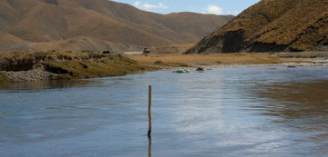

Post-doc research
|
Erosion of Tibet investigated using cosmogenic nuclide analysis of river sediments Palaeoglaciology of the Tibetan Plateau combining glacial geology with high resolution glacier modeling 120 ka animation with climate forcing Cosmogenic dating of tors in the Bavarian Forest |


|
|
PhD project:
|
|

{kind=link}
|
General
For the Tibetan Plateau, glacial reconstructions of the last glaciation range from one large ice sheet covering the entire plateau to restricted ice caps and valley glaciers in the highest mountain areas. Due to remote and harsh conditions and poor chronological constraints, the Tibetan glacial history is still elusive. My PhD project (started in December 2005) focuses on the northeastern part of the Tibetan Plateau centered on the Bayan Har mountain area and including the headwaters of Huang He (Yellow River). The Bayan Har mountains, presently non-glaciated, holds a wide array of glacial traces and have been suggested to have nourished the most extensive Quaternary glaciers on the Tibetan Plateau - the Huang He ice sheet. The objective of my research is to provide new data on the extent and chronology of former northeastern Tibetan glaciations, aiming towards a robust glacial reconstruction over long time periods. Ultimately, the result of my research would be a reconstruction that could show the outline (including topography) of glaciers on the northeastern Tibetan plateau for the entire Quaternary, as well as subglacial thermal regime, glacial erosion pattern, climate shifts... However, such a reconstruction is not within reach using available methods for paleoglaciological reconstructions of today, and a more realistic aim is to present a well founded time slice reconstruction and shed light on questions such as:
Methodology To reach a reconstruction and resolve the above questions four main methods are employed; remote sensing, field investigations, cosmogenic exposure dating, and glacier modelling. Remote sensing Using Landsat ETM+ satellite images (30/15 m resolution), SRTM digital elevation model (90 m resolution), and Google Earth we have mapped the glacial geomorphology of an extensive area of the NE Tibetan Plateau (136 000 km2). Landforms mapped include glacial valleys, marginal moraines, glacial lineations, meltwater channels and hummocky terrains. In addition, we have mapped the inner limit of fluvial incision with deep V-shaped valleys cutting backwards into a "relict" lower relief plateau landscape Field investigations Three fieldworks have been carried out in the Bayan Har area 2005-2007 (I participated 2006 and 2007), enabling field checks of (remote sensing) mapped glacial landforms and detailed point studies of glacial deposits. We have investigated glacial deposits in the central mountain areas with mapped clear large-scale glacial landforms and key locations further away from the mountain groups which, if formerly ice covered, indicate larger ice masses. In addition, we have actively searched for glacial indications (such as erratic boulders, striated clasts and diamicton) in the lower lying landscape lacking large-scale glacial landforms in an attempt to confirm or dispute former ice sheet glaciation. Cosmogenic exposure dating To constrain the timing of past glaciations we use 10Be exposure dating of glacial deposits (short/simplified explanation: 10Be is produced in earth surface quartz by cosmic ray bombardment → 10Be concentration yield exposure duration). We have dated glacial boulders, surface cobbles and sediment depth profiles from central Bayan Har, which enables us to put age limits on former glacial extents identified using remote sensing and field investigations. In an attempt to evaluate and quantify the (often large) geological uncertainties of exposure dating we have compiled an extensive dataset of glacial boulder 10Be exposure ages from the entire Tibetan Plateau as well as the Northern Hemisphere palaeo-ice sheets. Glacier modelling As a last step of my PhD project, we have used a glacier model to constrain the palaeo-climate based on the glacial geological record. By forcing a glacier model to produce glaciers of our mapped extents we can constrain the climate perturbations responsible for past glaciations. |
 Study area in the NE corner of the Tibetan plateau
Study area in the NE corner of the Tibetan plateau Remote sensing (Landsat ETM+ image)
Remote sensing (Landsat ETM+ image)Field investigations  Exposure dating: sampling a glacial boulder
Exposure dating: sampling a glacial boulder Exposure dating: the PRIME Lab accelerator
Exposure dating: the PRIME Lab accelerator Central Bayan Har Shan
Central Bayan Har Shan The Huang He (Yellow River) plain
The Huang He (Yellow River) plain |

Marginal moraines The topic of my undergraduate thesis project at Stockholm University was marginal moraines in the Swedish mountains. Based on aerial photograph interpretation, I mapped 467 marginal moraines (233 associated with contemporary glaciers and 234 relict moraines formed by pre-existing glaciers and ice sheets) all along the Swedish part of the Scandinavian mountain range. The moraines were classified into five morphological classes that you can download (point vectors) here: [shp-files] [kml-file] |

|